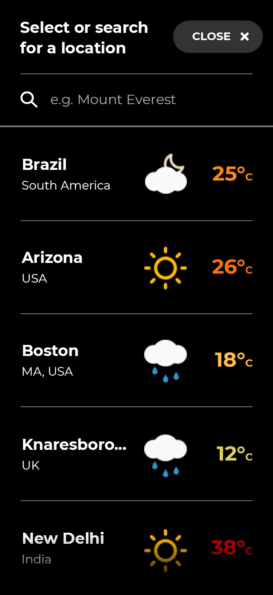
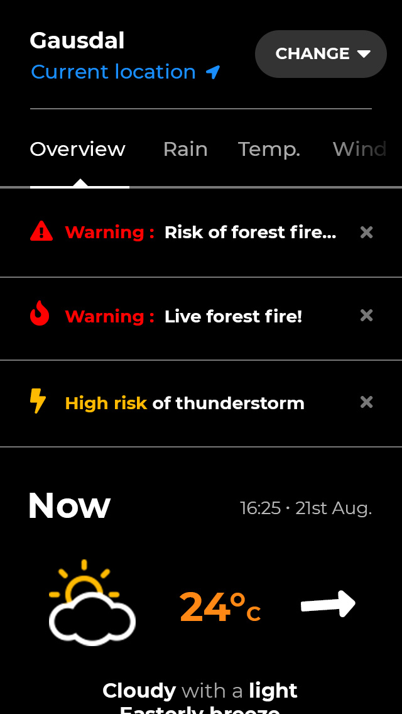

Jamie's Assigment
Thunder: Weather App
Weather is a crucial consideration for the enjoyment, safety and even feasability of outdoor pursuits. I was tasked with producing a weather app which would help outdoor enthusiasts to monitor the weather in their region quickly and effectively.
As per the Ginetta process of design, I started about thinking through the issue.
I asked the people I'm staying with what their weather-reading behaviours looked like. Given that they engage in various outdoors sports (including hiking, fishing, dog-sledding and cross-country skiing) and they have a farm to run (which is hugely dependant on weather) they seemed to fit the profile of potential users. They provided the following insights.
As mentioned above, it was essential to get the user to the most pertinent information as frictionlessly as possible. On startup the app should search for the user's location.
The user is taken to the overview for their current location
IF the user has used the service before... they are taken to their most recently viewed location
ELSE they are taken to the location selection screen with a message along the lines of “Please select a location to start using Thunder”
New users are taken to the location selection screen
Returning users are taken to the overview of their most recently viewed location.
Of course I took the considerations and thoughts from above to the paper to try and rough out a basic composition. You see some of the ‘not-so-pretty-but-rather-useful’ stuff that I put down here:
Of course now it's time to get my hands dirty and back at the computer.
It's pretty, it's clean, it's fashionable. What's not to like?
I really couldn't spend long on this given the time constraint, but these are the colors I picked (updated after I'd finished the interface)
I stumbled upon Meteocons by Alessio Atzeni which given the lack of time served the purpose nicely. I also made use of Font Awesome and Noun Project
I set myself the goal of at least developing the overview page to a reasonable standard. Typically if I have already figured out the rough composition on paper, I'll throw everything into the design program of choice with little concern for aligment, polish and file hygeine, and then progressively tidy things up. Here you can see the progress.
As mentioned previously, an important flow of a weather app is moving between places of interest. I managed to find some time to make a basic iteration of the location search/selection screen, although wasn't able to demonstrate the interactions.
I imagine the items in the list being sorted by recency, although I don't believe that the user needs to know (via a label or filter option) as long as they remain relevent. The act of actively managing a list of locations in your weather app is tedious, and this would likely provide a simpler solution. But who knows? It would be one of the first candidates for testing.
Also mentioned earlier were the severe weather warnings taking place in Norway (where I am) right now. I wanted to find a place for those that they wouldn't be missed. Clicking them would take the user to a ‘warnings’ map view so that they can be sure to avoid/be cautious of particular areas. Here's a very quick iteration.
Half way through this assignment I realised that the least important thing to the average user about wind is it's direction. Of more interest is speed and ‘gustiness’. Of course this is speculation but I think it's valid. Looking at the overview I had designed, I saw that the only information being displayed was direction, so I set about making a very quick animated icon to demonstrate how one might communicate the speed and variablility of the wind.
Weeeeell... honestly I didn't have the time or resources for this step. Better luck next time.
Thorough research into the process of predicting weather and what sort of data is available could have really provided some valuable insights - insights that might set this product apart from the many others.
It's been about 15 months since I left my last design job, and perhaps 9 months since I did any design work at all. Refamiliarising myself with the process and software was certainly a challenge, but I'm pleased with the speed with which it has come back.
I'm far more familiar with Mac in the context of design, but I was restricted to using a small windows laptop on this occassion. There were some minor language issues (it being in Norwegian) and I was unable to use Sketch which for this purpose I would have preferred.
I have to be honest, I did overstep the time limit (spending 5-6 hours on the design process and more to complete this write-up). Even with the extra time I granted myself for the 2 challenges mentioned above, there was still so much I wanted to do. It would of course be unfair to other applicants to do so.
I would design the map views (for rain, temperature, wind and warnings). Given only 1 day it was certainly more important to complete the overview and location selection, but my limited research and my own opinion tell me that these views are a highly desireable feature. Plus I like working with maps.
I don't think I could do anything more than the maps in a day, but some of the priorities are: the colors, location selection interaction and the app startup screen. Then I guess I would make a very basic interactive prototype to test the flow and first impressions.
It's an odd question. Either I start from scratch with the knowledge I have now in which case I would pretty much continue from where I am... or I start from scratch with a memory wipe, in which case I'd do it largely the same.
To answer your question in a less fesitious manner, I might consider reducing the scope of the project to a single element, such as the wind icon above. This way I would be focusing more on polishing a creative detail than trying to tackle the structure of the whole app.
Woof, woof, woof & thanks for your time!
Jamie Mitchell
Interaction Designer
Tequila
Motivator
Sigri
Distractor